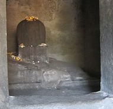
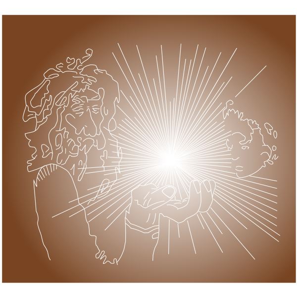
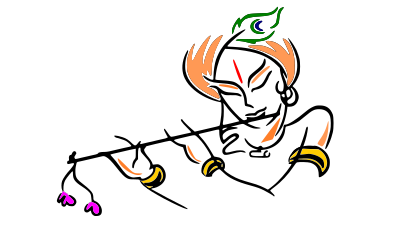
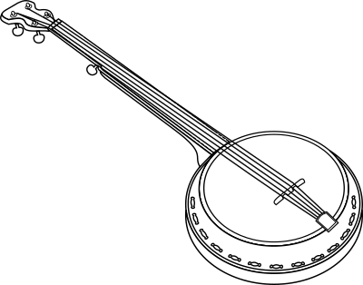

శంకర వివేకంజీవ స్పందన నేర్పు |

శంకర వివేకంజీవ స్పందన నేర్పు |
శంకర వివేకంజీవ స్పందన నేర్పు |
పోగు
పోగేస్తావా పోగులు పెడతావా
ఇరవై అంగుళాలు గా పుట్టావు
ఆరు అడుగులు పోగేసావు
రెండు సేర్లుగా వచ్చావు
నూరు సేర్లు పోగేసావు
పోగేస్తున్నది ఎవరు? పోగు ఎవరు?
పోగును పోగులు పెట్టు
పోగేస్తున్నదెవరో కనిపెట్టు
పూర్వ కర్మను తాడుగా చుట్టి
బొంగరంలా వచ్చావు
చుట్ట విడగొడతావా
మరో తాడుకు చుట్టుకుంటావా
పోగేస్తావా పోగుకు పోగులు పెట్టి
పోగేసేవాడికే మూలంలొ ఉన్న శైవంలొ ఇక్యమౌతావా
|
శంకర వివేకంజీవ స్పందన నేర్పు |
|  |
ఆకారంఅలంకారమొదిలేసిన వానికి పూలదండాలంకరణం భుజించాల్సిన అవసరం లేని వానికి కొబ్బరి సమర్పణం ఫలానా రూపమంటూ లేని వానికి లింగ రూపం తత్ చిత్రం మనిషి ఆకారం నుండి నిర్వికారానికి వెళ్ళడానికి సేతు బంధనం |
శంకర వివేకంజీవ స్పందన నేర్పు |
లక్ష్యంబోర్లా పడితే బొబ్బట్లు పాకితే పాయసాలు గడప దాటితే గారెలు అడుగులకు అరిసెలు సిసువు నుండి బాల్యం పండగే మరి ఎదగడం ఎదిగాక ఎమిటి లక్ష్యం ఎందుకు ఏదో చేసేయాలన్న జ్వరం పరుగులు సరిపోవనా వాహనాలు దేనికోసం కింకరులుగా యంత్రాలు అద్భుతం కోసమా యంత్ర సమూహాలు కొత్త అనుభూతి కోసమా తహతహలు కొత్త అనుభూతి క్షణ కాలం ఎల్లలని తెంచే వాంఛ అంతరంగం ఒక్కొక్కటిగా వ్యవహరిస్తే అంతులేని కధనం ఎల్లలే లేని అనుభవం శాశ్వతం |
శంకర వివేకంజీవ స్పందన నేర్పు |
అసలు విషయం
ప్రాణంబులు ఠావులు తప్పాల
మూర్ఛావస్థ రావాల
నేను అన్నది కరిగి పోవాల
గుండె లోతులోంచి ఆర్తనాదం రావాల
హర హర మహదేవ శంభో శంకర కాని
స్వామియే శరణమయ్యప్పా కాని
అప్పుడు గాని అసలు విషయం కనిపించదని
అంత వరకు చూసేది మాయేనని
|
శంకర వివేకంజీవ స్పందన నేర్పు |
దీపావలి
పృథ్వి ఉత్తర భాగం సూర్యునకి పెడమొహం పెట్టింది
ఈ భాగంలో జీవరాసులకు మందకోడితనం పట్టింది
ఆకాశ దీపాలు వెలిగించండి
లెక్కలేనన్ని జ్యోతులు ప్రజ్వలించండి
|
శంకర వివేకంజీవ స్పందన నేర్పు |
పంచేంద్రియాలు
కంటికి కనిపించింది నిజం కాదు
చెవికి వినిపించింది అసలు కాదు
జిహ్వకు తెలిసిన రుచి మొత్తం కాదు
ముక్కుకి తెలిసిన వాసన సమస్తం కాదు
స్పర్శ స్పందన అంతా కాదు
పంచేంద్రియాలు పంచ ప్రాణాలు నిలపడానికే
పంచ భూతాల తత్వం తెలవడానికి పని చెయ్యవే
మేధస్సు ఉనికిని నిలపడానికే
ఉనికిని నిలిపేవానిని గ్రహింప పని చెయ్యదే
ఉపాయం శివైక్య సాధనకి వీటిని సాధనాలుగా మార్చడమే
|
శంకర వివేకంజీవ స్పందన నేర్పు |
జయం, విజయం
సురులెవ్వరు శూరులెవ్వరు
అసురులకు సురకులిచ్చేవారెవ్వరు
చిచ్చు పెట్టేదెవ్వరు ఆపన్నరక్షకులెవ్వరు
ఆట ఎవ్వరిది నియమ నిర్ణేతలెవ్వరు
బరిలొని వారెవ్వరు బయట ప్రేక్షకులెవ్వరు
జయులెవ్వరు అపజయులెవ్వరు
ఇద్దరు తల్లుల్లున్నారా
ఒకే తల్లికి రెండు వర్గాల పిల్లల్లున్నారా
ప్రీతిపాత్రులే జయం పొందుతున్నారా
పులి జింకను చేజిక్కించుకుంటే జయమా
జింక తప్పించుకోలెకపోతే అపజయమా
గొంగూర ఒండుకు తింటే సంబరమా
పోలికలో రెండాకులెక్కువైతె విజయం
అసలు పోలికే లేక పోతె జయం
యద సడి సృష్టి సడితొ ఏకమైతే సంబరం
|
శంకర వివేకంజీవ స్పందన నేర్పు |
అగ్ని
అగ్గి కడుపులో ఉంటే జీర్నం
అగ్గి తలలో ఉంటే పఠనం
ఎక్కడ అగ్ని రగిలితే మోక్షం ?
|
శంకర వివేకంజీవ స్పందన నేర్పు |
రహస్య౦ |
|
సోది చెబుతానమ్మ సోది చెబుతాను ఉన్నది ఉన్నట్టు లేనిది లేనట్టు చెబుతాను కవి కోకిల రామాయణం చెబుతాను అష్టాదశ పురాణాలు చెబుతాను భాగవతం చదువుతాను భగవద్గీత శ్లోకాలు చెబుతాను అరుదైన మంత్రాలు ఉచ్ఛరిస్తాను వాటి భాష్యం తెలుసుకుంటాను అర్థాలు చదువుతూ చెబుతాను ప్రవచనాలు వింటాను ఆహా అంటాను గుడి గొపురంపై శిఖరాన్ని చూస్తాను కొలువున్న దేవత వైశిష్ట్యం కనుగొంటాను ఇన్ని చేసినా అనుభవం మారలేదు ఒడుదుడుకులకు నలిగిపోవడమాగలేదు పైన సమాధానాలకు సమాధాన పడలేక ఏం చెయ్యాలొ తెలియక ఎలా చెయ్యాలో తోచక |
సతమతమయ్యాను అయ్యా అని అర్ధించాను
కిటుకు జవాబులో లేదని
పదునైన ప్రశ్నలొ ఉందని
తెలుసుకోలేక తికమక పడ్డాను
బ్రహ్మాండంలో ఎన్నో రహస్య గదులు
తలుపులకన్నీ రక రకాల తాళాలు
గదిలొ ఏముందో చదివితే సమాచారం
ప్రశ్న అనే చెవ్వితో తెరిస్తే అనుభవం
ఒక్కో తాళానికి ఒక్కో చెవ్వి
ఎంతో నేర్పుతో చెక్కాలి
జాగర్తగా అరగ దీయ్యాలి
పలు మార్లు ప్రయత్నించాలి
|
శంకర వివేకంజీవ స్పందన నేర్పు |
అలవాటులొ పొరపాటుగా |
|
అలవాటులొ పొరపాటుగా పొరపాటే అలవాటుగా బ్రతుకే అలవాటుగా కష్టం లెకుండా సాగనిచ్చేట్టుగా చేసిందే చేసేస్తే చాలుగా అనుకుంటే సరిపోదుగా కడుపు నిండేదాకా అంగలుపొంగలుగా ఆ తరవాత ఒక్క సారిగా ఉన్నంత సరిపొదనిపించదా ఇంతకింతవ్వాలనిపించదా పూర్ణత్వం ఎలా వచ్చేననిపించదా ఇది ఉంటే అది లేదు అది ఉంటే ఇది లేదు రెండూ వస్తే మూడోది లేదు ఈ దాహం తీరేదెలాచెప్మా ఈ వెల్తి సృష్టి నియమమా లేక మానవ అయోమయమా సమస్తం స్వాధీనం ఐతేనే శమియించడం అది ఎలా సాధ్యం | సృష్టి సముద్రం మనిషి బొట్టు మాత్రం ఏమిటి మార్గం బొట్టులో సముద్రమా సముద్రంలో బొట్టా ఐక్యమయ్యకా తేడా తెలిసేనా బొట్టు బొట్టుగా ఉండాలంటే దాహం తీరదంతే ఉనికిని ఒదులుకుంటే సంపూర్ణమే ఆహా ఏమి అద్భుతం మానవ జీవితం మహత్తర అవకాశం బొట్టుని బొట్టులా ఉంచుతూ సంద్రాన్ని అనుభవిస్తూ కూర్మంలా నేలా నీట సంచరిస్తూ ఇటు సృష్టిలో భాగంగా అటు సృష్తికర్తగా రెండిటిగా రెండు ఒక్కటిగా ఉనికి శివాంశగా అంత్యమున ఐక్యమవ్వంగా శివోహంగా ముక్తిని పొందగా |
శంకర వివేకంజీవ స్పందన నేర్పు |
అమరిక |
|
ముందు తీపి చివర కారం వెనకది ముందు ముందుది వెనక ఇలా ఐతేనే అలా ఐతేనే ఎలా ఐతేనే అమరికలో ఏముందా లేక అంతా ఉందా పెద్ద తేడా ఏముండదా కొంచుమటూ ఇటూ నడిచి పోతుందా కిందది పైనా పైనది కింద అయ్యిందా అమరికలో ఏముందా లేక అంతా ఉందా అమరికలోనే సృష్టి రహస్యం దాగుంది సౌర కుటుంబం కాని బ్రహ్మాండం కాని కన్నుల విందవ్వనీ వీనుల విందవ్వనీ మాధుర్యమంతా అమరిక లోనె ఉన్నది అమావాస్య, పౌర్నమి, వెలుగు, నీడా తాళము, చెవ్వి, పదము, పద్యము మనిషి ఉనికి, సమస్థ జీవరాసులు స్థిథీ సృష్టి రూపమంతా ఆ అమరికలోనే ఉన్నది | కురుక్షేత్రములో చక్రవ్యూహము అభిమన్యుని చేతిలొ బండి చక్రము శంఖం, సుదర్శనం, శివుని చేతిలొ త్రిశూలం వైషిష్ట్యమంతా అమరికలొనే ఉన్నది వినా దైన్యేన జీవనం సునాయాసేన మరణం అనుదినం చేశే పని కష్టమా? సుఖమా? చీమ కాళ్ళు, సీతా కోక చిలుక రెక్కలు మర్మమంతా అమరిక లొనే ఉన్నది మానవుని వివేకము, మౌడ్యము రసం, భావం, అతని అనుభవం పశువౌతాడా? పశుపతౌతాడా? ఎంచుకున్న అమరిక తేలుస్తుంది రాగం సృష్టి నిర్ణయం, భావం అనుభవం సరైన తాళం పట్టుకుంటే యొగం భావ రాగ తాల సమ్మేళనం భారతం జీవన సంవిధానం |
శంకర వివేకంజీవ స్పందన నేర్పు |
నారసింహా
ప్రహ్లాదుడు అంతటా శ్రిమహావిష్ణువే అంటే
ఎక్కడాలేడని హిరణ్య కశ్యపుడు బెదిరించే
ఆవిర్భావ సమయం ఆసన్నమాయనని శ్రీహరి గ్రహించే
సృష్టి గర్భమంతటా నిండి నిబిడీకృతమై ఆక్రమించే
ఎచ్చోట దానవుడు చూప మన్న
అచ్చోటనే ప్రత్యక్షమౌ విధమున
అడిగిన వెంటనే వచ్చు రీతిన
వెలువడేందుకు ఉత్తర క్షణాన్న
ఆహా ఏమి ఆ ఉత్తమోత్తమ క్షణం
ఊహకందనిదీ వర్ణనాతీతం
సమస్త జగత్తు దేవాలయం గా మారడం
కూర్చున్న చోటే గర్భ గృహం
|
శంకర వివేకంజీవ స్పందన నేర్పు |
దేవాలయం
విశ్వానికి నాథునికి ప్రత్యేక ప్రదేశమా
విశ్వనాథుడు మనకి కనిపించగలిగే ప్రదేశమా
గర్భగృహంలో ఉంటాడా
మనకి సృష్టి గర్భం చూపిస్తాడా
|
శంకర వివేకంజీవ స్పందన నేర్పు |
 |
ఎలా ఉంటాడు శివుడు
ఎలా ఉంటాడు శివుడు వివరించు
ఎక్కడున్నాడు శివుడు చూపించు
ఆకాశంలొ కనిపిస్తాడా నీలకంఠుడు
మబ్బుల మనిషాకారమా చంద్రశేఖరుడు
అంతటా వ్యాపించి ఉన్నాడా
పూజించే రూపంలో ఉన్నాడా
తెలిసిన రూపంలో కనిపిస్తాడా
గుర్తుపట్టలేని విధంగా ఉంటాడా
కళ్ళు మూసుకుంటే కనిపిస్తాడా
వొళ్ళు మర్చిపోతే తాకుతాడా
హ హ హ వెర్రిబాగుల వాడా
తెలిసిన దానిలో కట్టుపడతాడా
ఇలాగా ఉంటాడు అలాగా ఉంటాడు
ఇక్కడా ఉంటాడు అక్కడా ఉంటాడు
ఆకాశంలో కనిపిస్తాడు భూమిమీదా కనిపిస్తాడు
మబ్బులో గుండె లబ్-డబ్లో చంద్రశెఖరుడు
కుండ కుమ్మరిలా కుర్చీ వడ్రంగిలా ఉండేనా
జ్ఞ్యాపక శక్తి తనని తాను గుర్తు పట్టేనా
మెలకువలోంచి నిద్రావస్థలోకి జారుతుండగా
కళ్ళు మూసి వొళ్ళు మర్చిపోతుండగా
అప్రమత్తమై గమనించు నరసింహుడిలా రావచ్చు
త్రిశూలధారిలా రావచ్చు అసలు రూపమేలేకుండొచ్చు
రూపాంతరం చెందుతున్న తరుణం
మార్చేవాడిని గ్రహించే సమయం
కరిగిపోవాలనుకుంటే శివైక్యమైపోయే క్షణం
|
శంకర వివేకంజీవ స్పందన నేర్పు |
|  |
అధ్భుతం
అద్భుతాలు దేవులాడతాం
భూతాలుగా మారుతాం
కట్టడాలకి కట్టడవుతాం
అధ్భుతమో సామాన్యమో
ఆస్వాదించే శక్తి అద్భుతం
జీవితమే మహా అద్భుతమని గుర్తించం
|
శంకర వివేకంజీవ స్పందన నేర్పు |
సంపూర్ణంచితి గురించి చింత లేదు జీవనభృతికి దిగులు లేదు ఏదో సాధించేయాలనే వెర్రి లేదు ఆశ అడియాశౌనని భయం లేదు కానీ అన్నిట్లో నిబద్దతతో పాల్గొంటాను లీనమై నిమగ్నమై దాచుకోకుండా చేస్తాను రోజూ చేసేదైనా అరుదుగా చేసేదైనా కాయ కష్టమైనా బుద్ధికి పరీక్షైనా పూర్తిగా ఆస్వాదిస్తాను పూర్ణత్వం అనుభవిస్తాను శంకరుని పాదాల వద్ద చోటడిగాను మహాదేవుడు కరుణించి భుజాలెక్కించుకున్నాడు |
శంకర వివేకంజీవ స్పందన నేర్పు |
|  |
జన్మాష్టమిగాడిది తోకకి నిప్పంటింది భయంతో పరుగులు తీసింది దెబ్బకి వెనక పడిన గుర్రం పోటీకి నిప్పంటించుకుంది ఉన్నదంతా పెట్టి పరుగెత్తాయి పోటా పోటీ మొదలయ్యింది నెయ్యి పోసిన మంట తోకలని బాగా కాల్చింది జన్మాష్టమి రోజని వెదురు కూడా స్వరం పలికింది శ్రీకృష్ణ భజనలతో వేణు గానం గింగురులెత్తింది గాడిది మనసులో ఒక ప్రశ్న పుట్టింది అగ్ని లేకున్నా శ్రికృష్ణుని వేగం ఎక్కువెలా అయ్యింది చిరునవ్వుతో కష్టాన్ని అవలీలగా ఎదుర్కుంటాడంది ఇట్టాంటి లీల ఎట్టా సాధ్యం గుర్రమూ అడిగింది శ్రికృష్ణుడు ప్రత్యక్ష్మయ్యాడు తోకల నిప్పారింది శ్రికృష్ణువాచ తోకల నిప్పు కాదు వేగాన్ని పెంచేది శ్రద్ధా భక్తి కూడిన అగ్ని మనసులో రగలాలి దాచుకోకుండా ఉన్నదంతా పెట్టి పరుగెత్తాలి నేను పరిగెడుతున్నా అన్న భావన కాలిపోవాలి స్వయం భస్మం మనస్పూర్తిగా శివునికి సమర్పించాలి |
శంకర వివేకంజీవ స్పందన నేర్పు |
|  |
ఏమీ తెలియదుసరస్వతి దేవి చేతిలో వీణను ఎలా మీటితె అలా పలుకుతాను స్వరం బావుంటే అమ్మ కరుణ బాలేకపోతె నా అప్రయొజకత్వం నాకు తెలిసిందేమి లేదు తెలుసుకునే అవకాశమూ లేదు సముద్రం తెలవాలంటే తాగప్రయత్నించద్దు ఉప్పులా సముద్రంలొ కలిసిపొవాలి |
శంకర వివేకంజీవ స్పందన నేర్పు |
తన పరవీడు గెలిస్తె పరవశమై తాండవం చేసా వాడు గెలిస్తె విషాదంలొ మునిగి తేలా గెలిచిన వాడు నాకేమౌతాడు తెలుసా ఓడిన వాడు అయినవాడు కాదా నా వారిని గుర్తించే ముద్రేది పరాయి వారిని మినహాయించే గీతేది అయ్యొ రామా నేను వెతికేది నాకు నేను వేసుకున్న ముద్రలవి ప్రాంతీయ ముద్రకి అయిన వాడేమో వృత్తి ముద్రకి కాని వాడేమో భాషా ముద్రకి కాని వాడేమో విద్యా ముద్రకి అయిన వాడేమో ముద్రలతో పోలిక తారుమారు అయిపోయే తన, పర ఎవరో అయొమయమయ్యే సర్వేశ్వరుని పోలికలో ముద్ర వేసేస్తే వాడు వీడు మరి అయినవాళ్ళే |
శంకర వివేకంజీవ స్పందన నేర్పు |
వెలుగువెలుతురుకి ఇంధనం కావాలి దినకరుడు సూర్యుడూ కాలాలి నూనె నిండుకుంటే దీపం కొండెక్కే కొండెక్కని దీపం శివం కాళరాత్రే ఉన్నవన్ని శివైక్యం కావాల్సిందే వాయిదాల్లోనా ఒకేసారా తేల్చుకోవాలె మనిషి కాకపోతె ఈవాటానే తగలెయ్యగలం మనిషైతే సర్వం ఈసారే కాల్చేయగలం నూలుపోగు మిగిలినా మళ్ళిరావాలి మొత్తం కాలబెట్టి వెలిగొపోవాలి శివునిలో ఐక్యం కావాలి తన్మే మనశ్శివ సంకల్పమస్తు |